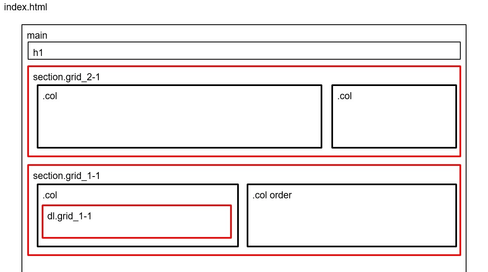
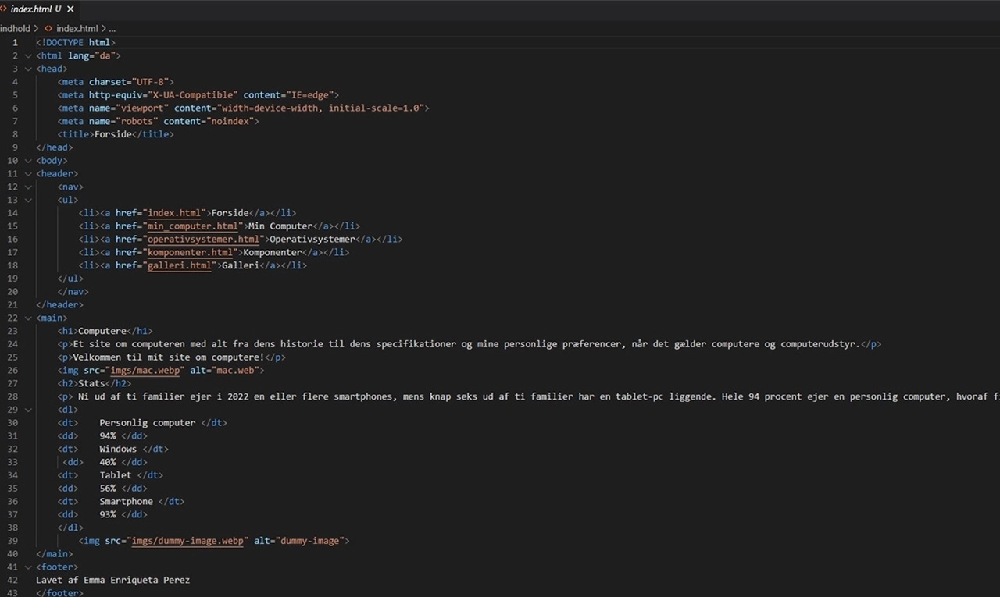
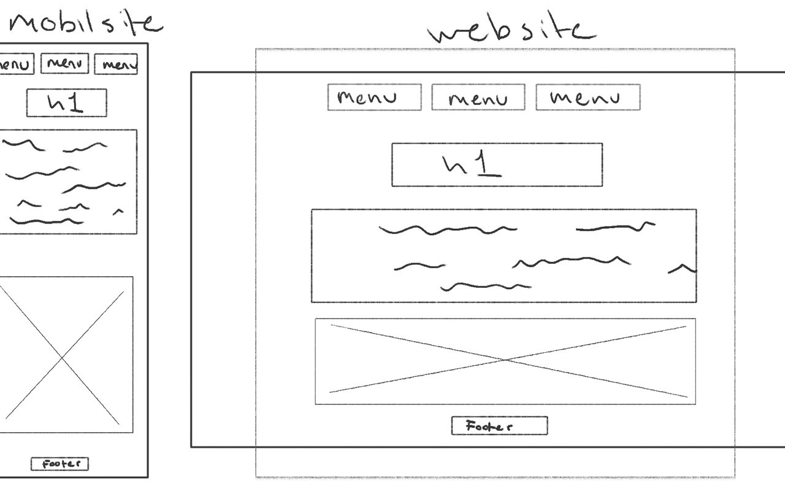
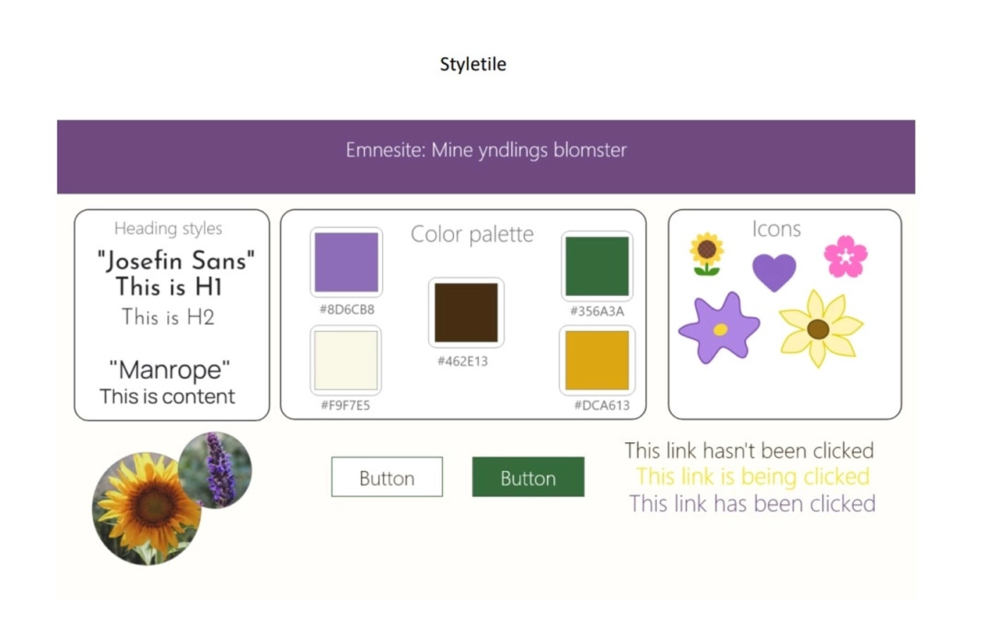

Tema 2
I tema 2 lavede vi 2 opgaver, Studiestartsprøven og Emnesite. Jeg blev introduceret til grundlæggende faglige begreber inden for design af digitalebrugergrænseflader, digital indholdsproduktion, digital kommunikation og responsivt webdesign. Jeg lærte at sætte websider op i HTML og CSS og får de første hands-on færdigheder inden forudarbejdelse af grafik og billedbehandling i Photoshop, opsætning af tekst og billeder i Adobe XD.
Studiestartsprøven (02.01.02)
I studiestartsprøven var rammerne var allerede sat. I opgaven skulle jeg opbygge vores første version af website med fokus på en grundstruktur med undersider og navigationsmenu. Jeg fik udleveret billeder og tekster, som jeg skulle indsætte i HTML'en efter et wireframes og layoutdiagrammer, som jeg også fik udleveret. Sitet skulle selvfølgelig også være responsiv både på web- og mobilsite.


Opgaveløsning
Emnesite (02.02.01)
På Mit Emnesite skulle jeg designe og lave mit eget site, om et valgfrit emne. Sitet skulle være på 2-6 sider og jeg skulle udvikle et design ud fra den stil, jeg har valgt. Jeg startede med at sætte mig godt ind i de design principper den stil du har valgt, benytter sig af. Jeg udarbejdede moodboards, wireframes og planlagde mit styletile. Udover kodning lærte jeg også om Gestaltlovene, som jeg skulle have i betragnig, når jeg lavede siden.

